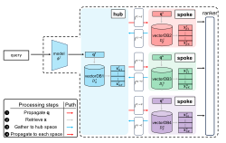
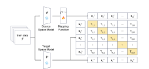
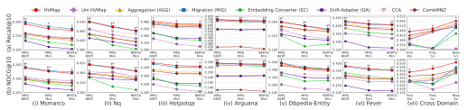
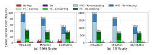
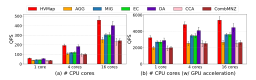

Many real deployments must serve queries over multiple independently constructed vectorDBs built with different embedding models. Vectors and similarity scores are not directly comparable across embedding spaces, and resolving this through corpus-wide re-embedding and re-indexing is often operationally prohibitive. Existing methods face a difficult trade-off between retrieval quality, construction cost, and query throughput.
We present HVMap, a lightweight compatibility layer for federated retrieval across heterogeneous vectorDBs. HVMap learns bidirectional mappings between embedding spaces using a fuzzy contrastive loss, enabling calibrated cross-database scoring without corpus migration or index reconstruction, and scales to many vectorDBs through a hub-based architecture. Across open-domain, cross-domain, and scale-out settings, HVMap achieves up to 3.59× higher nDCG@10, up to 2.01× higher query throughput, and construction time as low as 0.3% of baseline methods.
A query is encoded once by one model, $\mathbf{q}^t = \phi^t(\text{text}_q)$, and mapped to the other space with a lightweight function $\mathbf{q}^s \approx f^{t\to s}(\mathbf{q}^t)$ instead of running a second embedding model. Each vectorDB is searched in its own space, and every retrieved candidate is mapped into the opposite space so the ranker can score it with both a native and a mapped similarity:
The ranker keeps the global top-$K$ over all $2K$ candidates, so any source can contribute all $K$ results even under skewed relevance. A slightly larger native weight ($w_1 = 0.7$) works best, since the native score carries no mapping error.

One embedding space acts as the hub and the rest as spokes. The query is propagated from the hub to every spoke, candidates are gathered into the hub space, then propagated to each spoke in a single batch. This keeps the number of mappings at $O(N)$ instead of $O(N^2)$, bounds any cross-space transformation to two steps (spoke → hub → spoke), and lets a lightweight hub model keep query embedding cheap.

The mapping $f$ is trained on paired embeddings of the same documents with both embedding models frozen. Instead of a fixed contrastive margin, every pair gets a margin equal to its semantic distance in the target space, and each mapped-to-target distance is regressed toward it:
Diagonal terms align each mapped embedding with its paired target, while off-diagonal terms preserve its graded relations to the other target vectors — matching exactly what an unchanged target index compares at query time.
(a) Retrieval quality — Figure 5

Recall@10 and nDCG@10 across six open-domain datasets and three cross-domain settings.
(b) Construction cost — Figure 6

Construction cost at the 50M and 1B scales.
(c) Query throughput — Figure 7

QPS on NQ (MP&Mini), CPU-only and with an A100 GPU.
For scale-out experiments, ablations, and more detailed findings, please refer to the full paper.
@article{lim2027hvmap,
author = {Lim, Mintaek and Hyeon, Sieun and Choi, Geon and Do, Jaeyoung},
title = {Federated Vector Retrieval across Heterogeneous VectorDBs},
journal = {Proceedings of the VLDB Endowment (PVLDB)},
year = {2027}
}